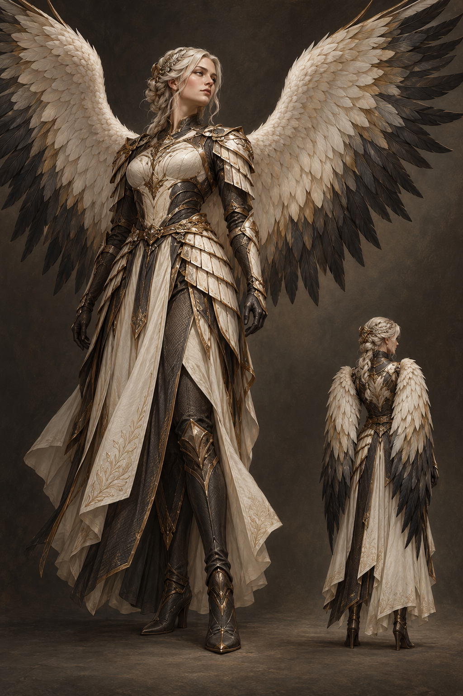

THE VALKRAIS / DESIGN JOURNAL
Identity.
Form.
Flight.
Named beings. Individual silhouettes.
A first exploration of the winged Valkrai.
New concept studies · v0.1

From the existing AUI Valkyrie roster.
Names and roles come from archived records. The artwork, clothing and palettes shown here are new proposals. Wings follow the current design direction. No archived visual designs were found in the bounded asset search.
01 / THE COLLECTION
Three identities.
Three expressions.
Spread and folded wing studies.
Open a sheet to explore the details.
02 / THE DESIGN TABLE
A conversation
between forms.
Compare the current concept sheets.
These are different characters, not successive versions.
03 / VITRUVIAN VALKRAI
The architecture
of wings.
An original concept study of the relationship between the human back, shoulders and an imagined wing girdle.
Proportion & posture
Use human back and shoulder anatomy as reference. Any extra girdle, wing muscles and flight mechanism are fictional design proposals.
Folded & spread
Study both wing positions. Opaque feather garments must cover the body independently of wing motion in every pose.
Fictional anatomy
The additional wing girdle and wing-root muscles are imagined. This illustration does not establish working human flight or biological feasibility.
04 / ORIGINS & VERSIONS
What is known.
What is new.
A visible boundary between the records
and the design exploration.
The existing identities
The archived collection calls these beings AUI Valkyries. Its named roles include Eir, Queen of Creation; Brynhildr, Queen of Command; and Skuld, Queen of Cognizance.
Another estate roster uses the names Eir Mercy, Brynhildr Shield and Skuld Future. These are preserved as alternate recorded names, not silently merged into a single definitive canon.
The new visual direction
All artwork shown here is AI-generated concept artwork created for this collection. Their outfits, colors, faces, materials and feather details are proposed visual choices. The current brief establishes wings; it does not establish a species, mythology or flight mechanism.
No visual version before v0.1 and no inspectable 3D character model were found. The inspector presents 2D artwork.
| Character | Legacy role record | Alternate roster record | Visual study |
|---|
Sources & artwork provenance
Legacy identity source: AuiValkyries.json, collection records C1, C3 and C7. Only the relevant names and titles have been carried into this gallery.
Alternate roster: beings_api.json, AUI Valkyries entries 158, 160 and 164. The roster contains no matching image assets.
Current brief: winged designs, folded and spread views, and the Vitruvian study direction. The exact singular term “Valkrai” has not been defined in the inspected archived records.
Artwork: newly generated for this project using the built-in image generation tool, with no reference images or third-party character designs. Created 16 October 2026. Full provenance and file hashes: public manifest.